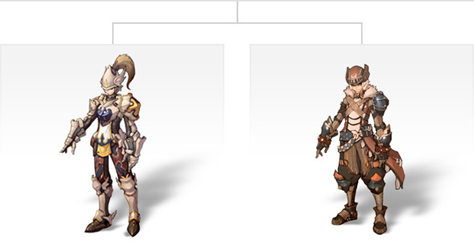
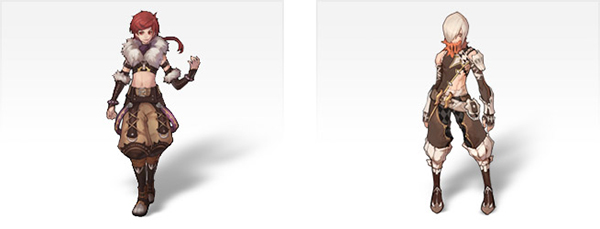
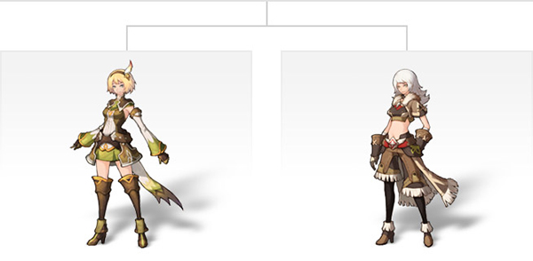
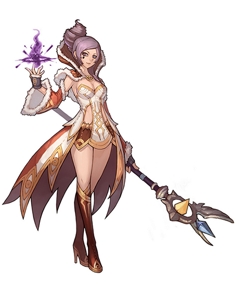
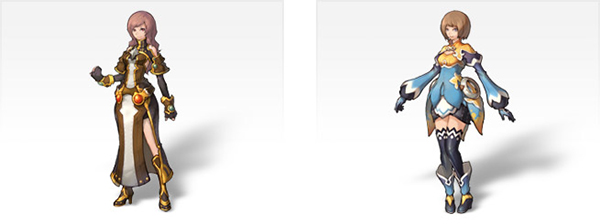

画像にリンクがはってあるものは、クリックすると別窓で大きめサイズが表示されます。
| ソードマン(Swordman)男 |
|  |
| ソードマン2次職 (左：Knight 右：Warrior) |
| シーフ(Thief)男 |
|  |
| シーフ2次職 (左：Rogue 右：Assassin) |
 |
| アーチャー(Archer)女 |
|  |
| アーチャー2次職(左：Ranger 右：hunter) |
|  |
| マジシャン(Magician)女 |
|  |
| マジシャン2次職 (左：Wizard 右：Sorcerer) |
| アコライト(Acolyte)女 |
| アコライト2次職 (左：Priest 右：Monk) |
back
(c) Gravity Co., Ltd. & Lee MyoungJin(studio DTDS). All rights reserved.
(c) GungHo Online Entertainment, Inc. All Rights Reserved.
当コンテンツの再利用（再転載・配布など）は、禁止しています。